Строительная компания
Соединяем берега
Строим и реконструируем мосты,
путепроводы и автомобильные дороги
Архив проектов
Восемь объектов ЮКС — от мостов
через малые реки до федеральных трасс
О компании
Инженеры
и строители
С 2022 года ЮКС объединяет специалистов по строительству мостов и мостовых сооружений
Работаем на каждом этапе — от устройства фундаментов и опор до монтажа пролётов
За каждым объектом стоят люди, техника и точность инженерных решений
На стройплощадке
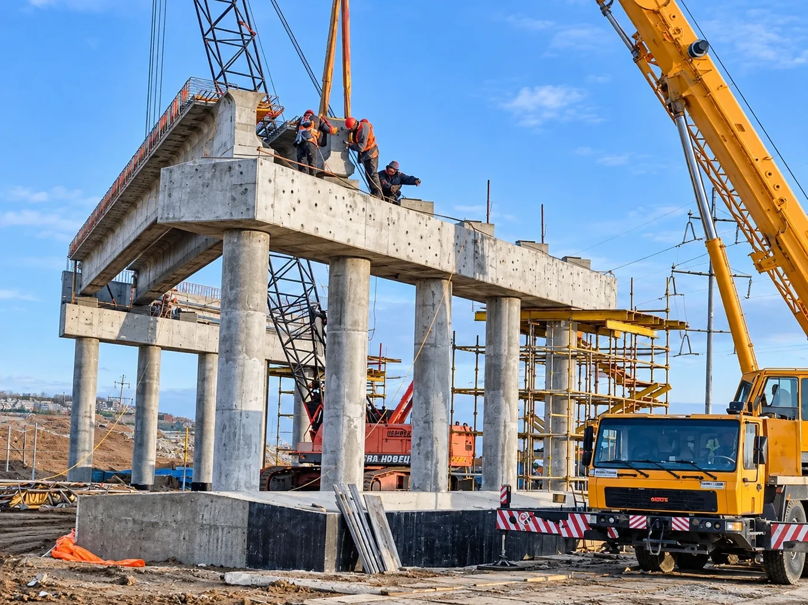
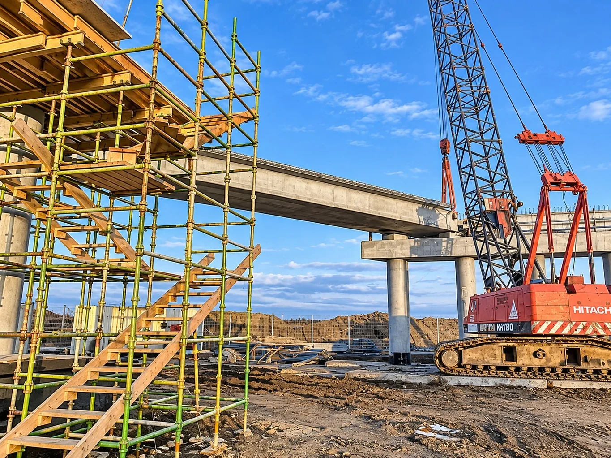
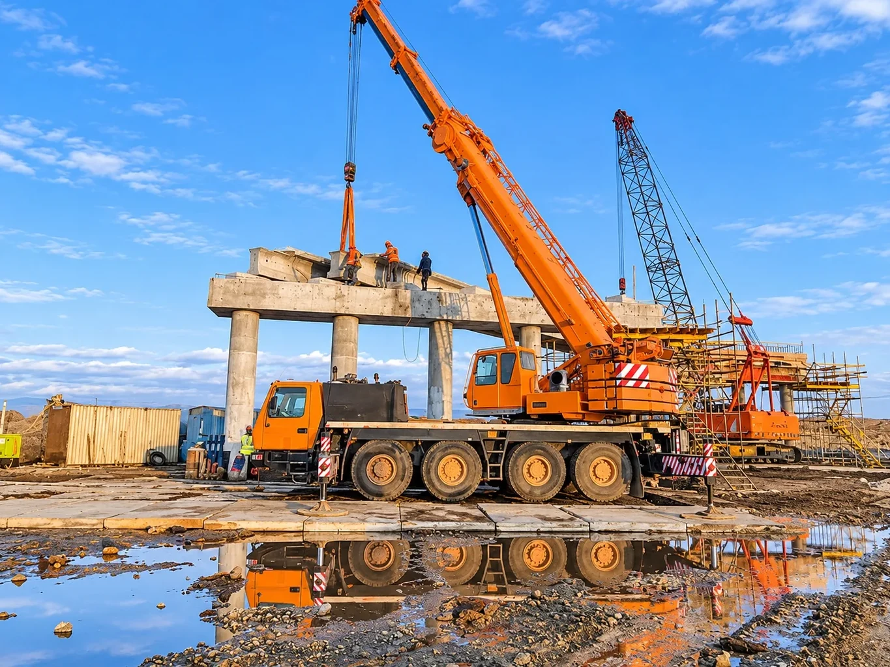
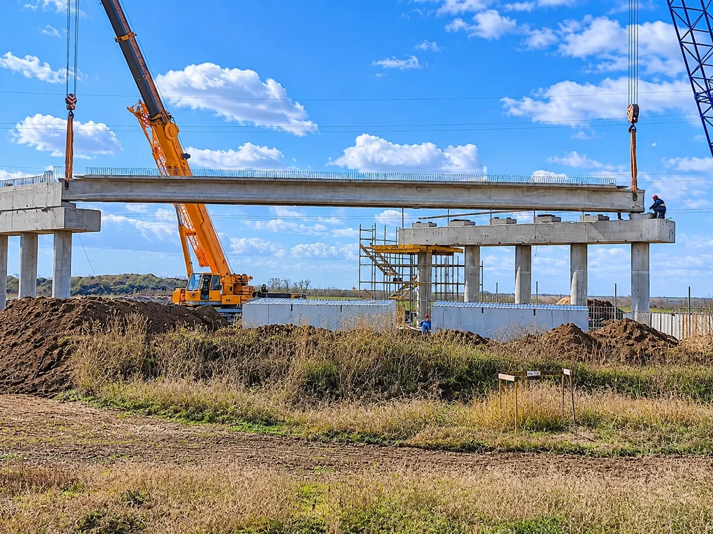
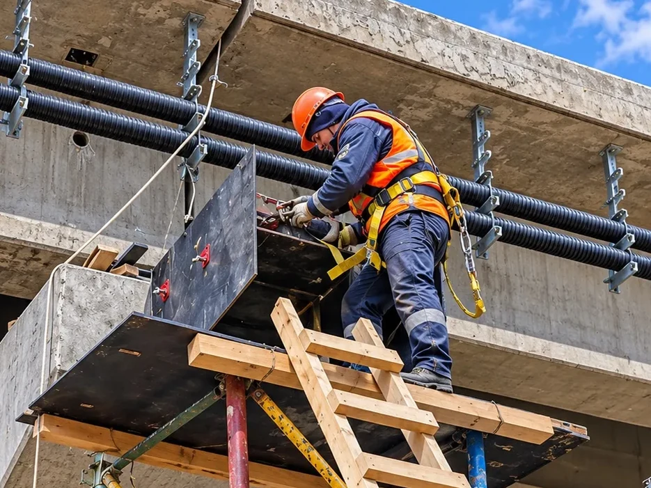
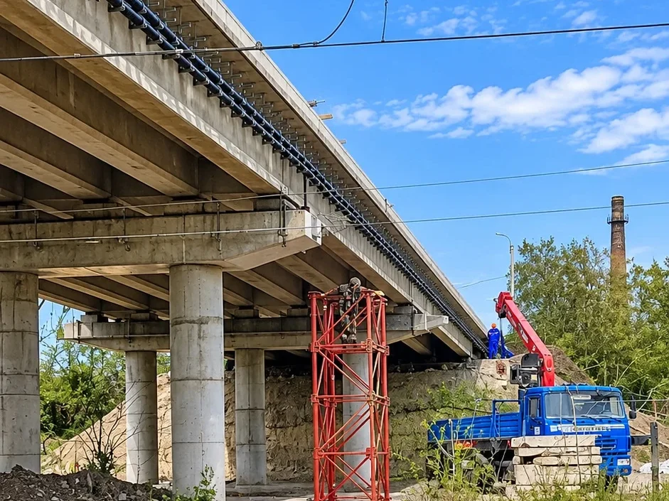
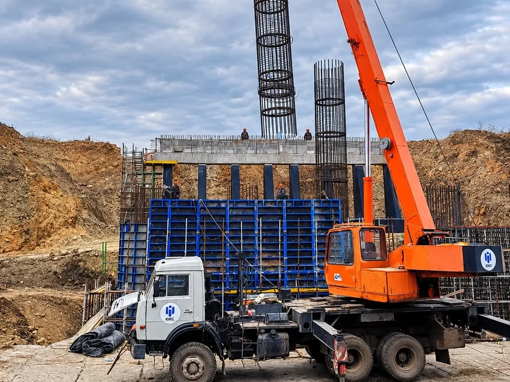
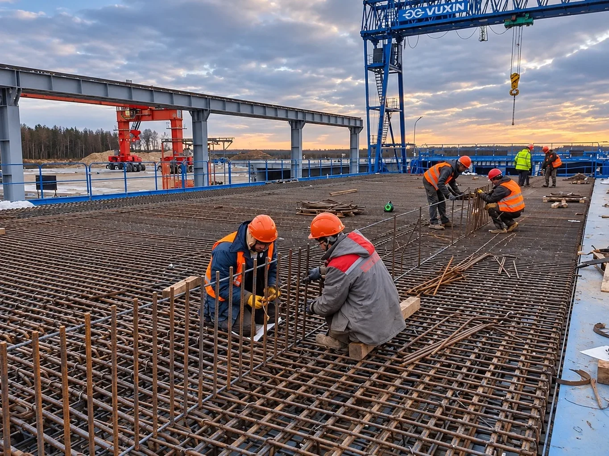
Компетенции
Что мы
строим
Строительство мостов
Возводим мосты через реки: устраиваем фундаменты, строим опоры и монтируем пролётные строения
Мостовые сооружения
Строим путепроводы и другие инженерные сооружения в составе транспортной инфраструктуры
Реконструкция и ремонт
При реконструкции мостовых переходов демонтируем старые конструкции и устанавливаем новые
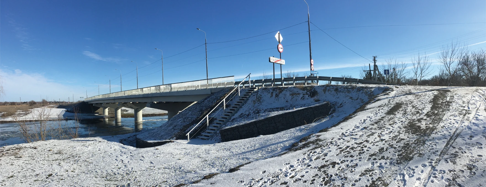
Дорожная инфраструктура
Участвуем в развитии автомобильных дорог и транспортных коридоров, включая мостовые сооружения на федеральных трассах
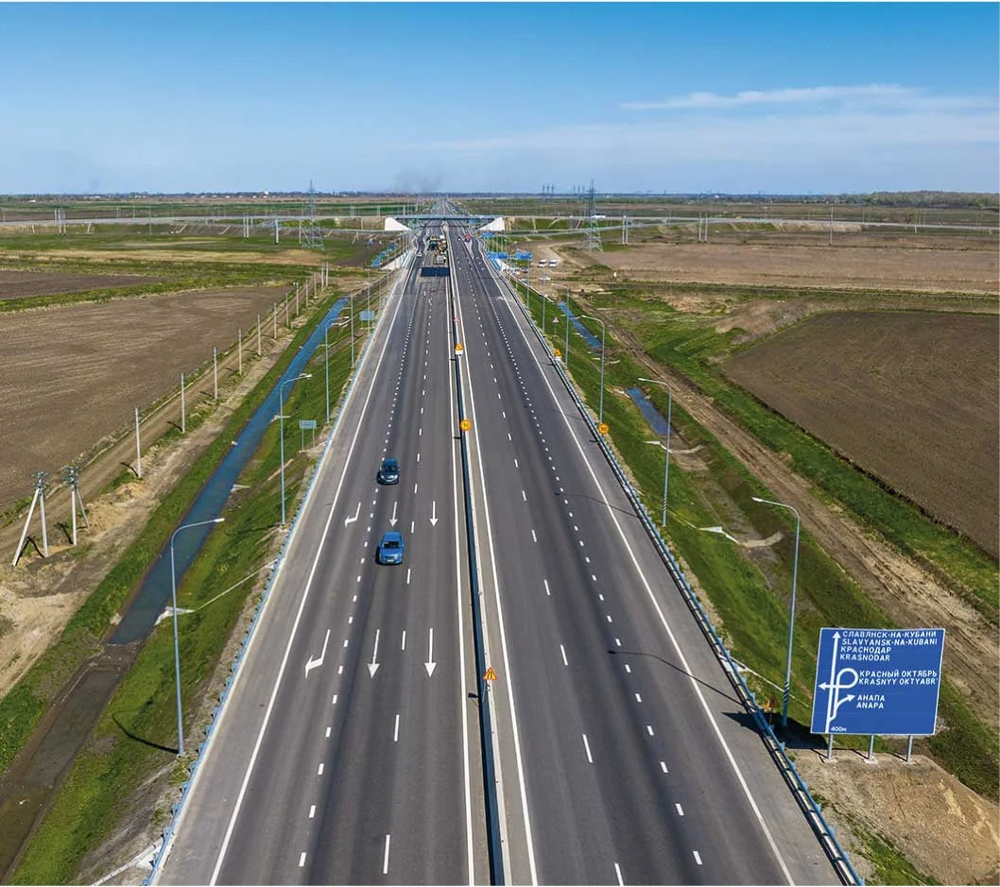

Карьера в ЮКС
Строим
вместе
Наша команда — инженеры и специалисты на стройплощадках
Наши партнёры
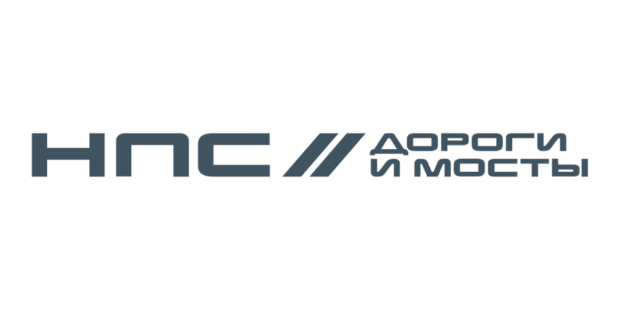